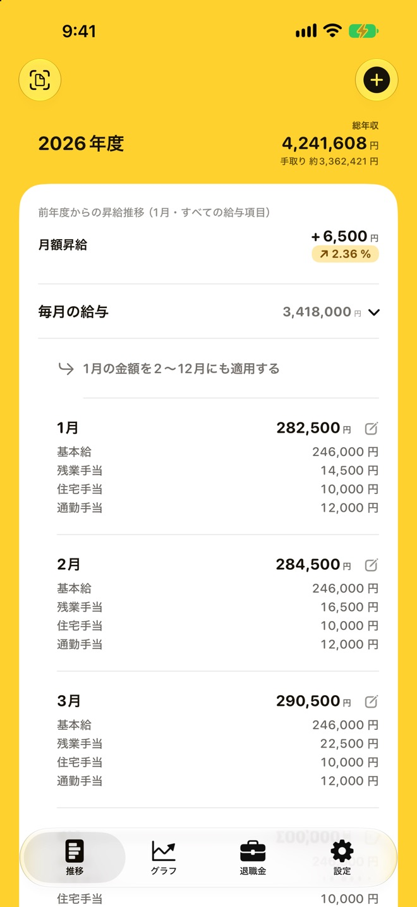
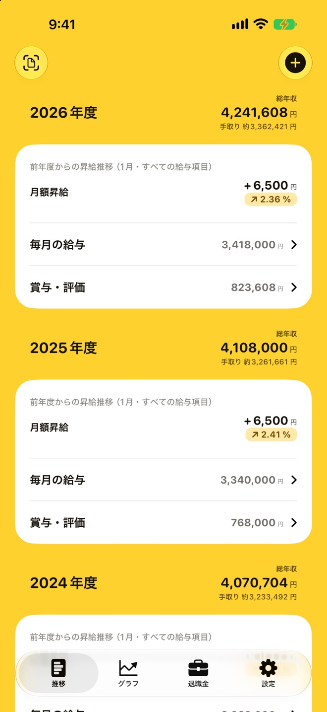
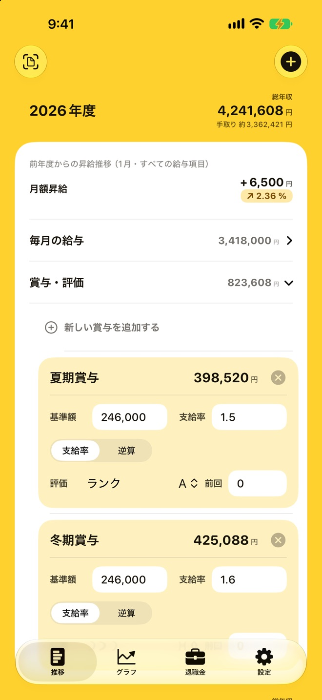
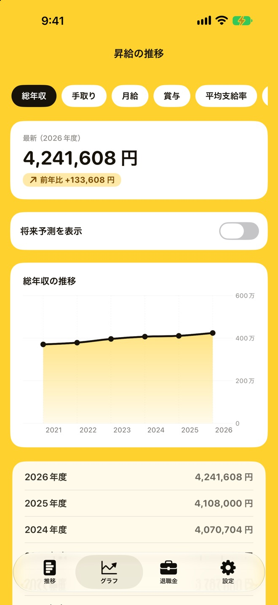
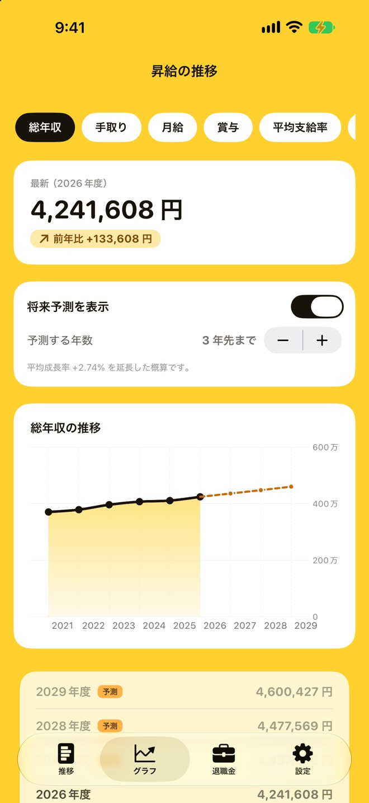
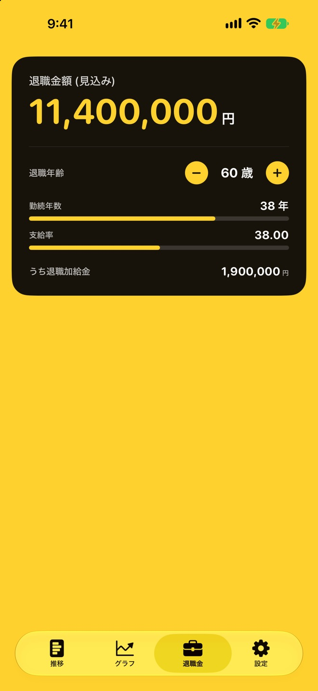

毎月の給与を、
明細どおりに記録
基本給・残業手当・住宅手当・通勤手当など、給与項目は自分の明細に合わせて自由に作れます。月ごとの金額が項目別に並びます。
- 1 月の金額を 2〜12 月にまとめて使える（ボタンは設定で表示・非表示）
- 非課税の手当は、手取りの概算で分けて計算

「去年より、どれくらい給料は上がったんだろう？」。毎年の給与明細を見比べなくても、NextPay なら年度ごとの年収と月額の昇給率がすぐにわかります。毎月の給与と賞与を記録するだけで、手取りの概算や数年先の見込み、退職金の見込みまで、自分のお金の推移がまとめて見えるようになります。
App Store で見るiPhone・iPad（iOS 18 以上）／アカウント登録は不要です

前年の 1 月と比べた月額の昇給額と昇給率を、年度ごとに表示します。残業手当などを除いた「本当の昇給」も確かめられます。
給与明細の PDF を、フォルダごとまとめて取り込めます。読み取った金額と合計を確かめてから反映できます。
入力した給与も明細の読み取りも、すべて端末の中で処理します。外部へデータを送ることはなく、アカウント登録もいりません。
給与明細が届いたら記録するだけ。グラフと見込みは、アプリが自動で作ります。
基本給や手当を、自分の明細に合わせた項目で入力します。PDF の明細があれば、取り込むだけで反映できます。
総年収・手取り・賞与・昇給率をグラフで切り替えて、年ごとの変化を確かめます。
これまでの伸び方から数年先の年収を予測し、勤続年数に応じた退職金の見込み額も計算します。
毎月の記録から、グラフ、予測、退職金まで。自分の会社の制度に合わせて使えます。
基本給・残業手当・住宅手当・通勤手当など、給与項目は自分の明細に合わせて自由に作れます。月ごとの金額が項目別に並びます。

月をタップすると、その月だけを直す編集画面が開きます。「保存」を押すまで金額は変わらないので、一覧を眺めているときに数字を書き換えてしまう心配がありません。
基準額・支給率・評価ランクを入れると、自分で作った計算式で賞与の金額を計算します。夏と冬など、1 年に何回でも追加できます。

総年収・手取り・月給・賞与・平均支給率・昇給率を切り替えて、年ごとの推移をグラフで確かめられます。前年との差もひと目でわかります。

「将来予測を表示」をオンにすると、これまでの平均の伸び方から、数年先の年収の見込みを点線で表示します。何年先まで予測するかも選べます。

勤続年数に応じた支給率と、自分で作った計算式から、退職金の見込み額を計算します。退職年齢を − / ＋ で変えると、金額がすぐに変わります。

PDF を選ぶか、フォルダごと選ぶと、サブフォルダの中までまとめて読み込みます。支給額・控除・差引支給額を読み取り、合計が合っているかを確かめてから反映できます。
基準額 × 支給率 × 評価の係数など、会社の制度に合わせて賞与の計算式を組み立てられます。
S・A・B などの評価ランクと、それぞれの係数や昇給点を自由に決められます。
扶養人数や保険料率を入れると、明細の無い月の手取りを概算します。PDF を取り込んだ月は、明細の手取りと控除の内訳を使います。
昇給率に含める給与項目を選べます。月によって変わる残業手当などを外すと、基本給の伸びだけを確かめられます。
ホーム画面のアイコンを、4 種類のデザインから選べます。
iPad では横長の画面で一覧とグラフを広く見られ、サイドバーでも画面を切り替えられます。
入力した給与のデータは端末の中にだけ保存され、開発者のサーバーへ送ることはありません。給与明細の PDF の読み取りも端末の中で行い、PDF そのものは保存しません。アカウント登録も、解析や広告の仕組みもありません。
2 年度分の記録とグラフは、お支払いなしで使えます。長く記録したくなったら、買い切りの NextPay Pro へ。
お支払いなしで使える範囲
買い切り（1 回のお支払い）
購入した NextPay Pro は、同じ Apple アカウントのほかの端末でも「購入を復元」で使えます。
手取り・将来の年収・退職金の金額は、入力した値と設定から計算した目安です。実際の金額は、勤務先の制度や税・保険料によって異なります。